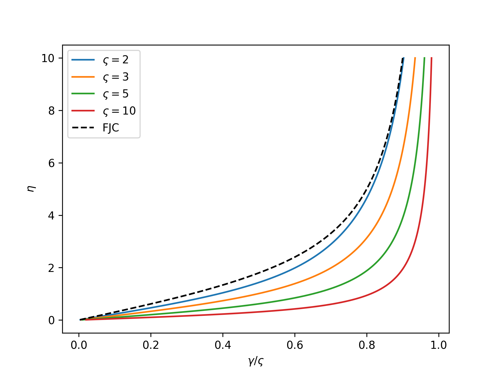

ufjc.swfjc
The core module for the SWFJC single-chain model.
This module contains the core class SWFJC which, upon instantiation,
becomes a SWFJC single-chain model instance with methods for computing
single-chain quantities in either thermodynamic ensemble.
The SWFJCIsometric and SWFJCIsotensional classes are also
contained within this module.
The SWFJC is the uFJC model with a square-well link potential,
which is a special case that is efficiently treated separately.
Example
Import and create an instance of the model:
>>> from ufjc import SWFJC
>>> model = SWFJC()
- class SWFJC[source]
Bases:
ufjc.swfjc.SWFJCIsotensionalThe SWFJC single-chain model class.
- N
The number of links in the chain.
- Type
int
- varsigma
The nondimensional well width.
- Type
float
- class SWFJCIsometric(N_b=8, varsigma=3)[source]
Bases:
ufjc.utility.BasicUtilityThe SWFJC model class for the isometric ensemble.
- N
The number of links in the chain.
- Type
int
- varsigma
The nondimensional well width.
- Type
float
- class SWFJCIsotensional(N_b=8, varsigma=3)[source]
Bases:
ufjc.swfjc.SWFJCIsometricThe SWFJC model class for the isotensional ensemble.
- N
The number of links in the chain.
- Type
int
- varsigma
The nondimensional well width.
- Type
float
- beta_varphi(eta)[source]
The nondimensional isotensional free energy as a function of the nondimensional force,
\[\beta\varphi(\eta) = -\ln\mathfrak{z}(\eta).\]Note that this becomes the isotensional free energy of the FJC model as \(\varsigma\) goes to zero,
\[\lim_{\varsigma\to 0}\beta\varphi(\eta) = \ln\left[\frac{\eta}{\sinh(\eta)}\right].\]- Parameters
v (array_like) – The nondimensional force.
- Returns
The nondimensional isotensional free energy.
- Return type
numpy.ndarray
Example
Plot the nondimensional isotensional free energy as a function of the nondimensional force for varying \(\varsigma\):
>>> import numpy as np >>> import matplotlib.pyplot as plt >>> from ufjc.swfjc import SWFJCIsotensional >>> eta = np.linspace(0, 10, 1000)[1:] >>> _ = plt.figure() >>> for varsigma in [0.01, 1, 3, 10, 30]: ... model = SWFJCIsotensional(varsigma=varsigma) ... _ = plt.plot(eta, model.beta_varphi(eta), ... label=r'$\varsigma=$'+str(varsigma)) >>> _ = plt.plot(eta, np.log(eta/np.sinh(eta)), ... 'k--', label='FJC') >>> _ = plt.xlabel(r'$\eta$') >>> _ = plt.ylabel(r'$\beta\varphi$') >>> _ = plt.legend() >>> plt.show()
- gamma_isotensional(eta)[source]
The nondimensional end-to-end length as a function of the nondimensional force in the isotensional ensemble,
\[\gamma(\eta) = -\frac{\partial}{\partial\eta}\,\beta\varphi(\eta) = \frac{\partial}{\partial\eta}\,\ln\mathfrak{z}(\eta).\]Note that this becomes the Langevin function of the FJC model as \(\varsigma\) goes to zero,
\[\lim_{\varsigma\to 0}\gamma(\eta) = \coth(\eta) - \frac{1}{\eta} = \mathcal{L}(\eta).\]- Parameters
v (array_like) – The nondimensional force.
- Returns
The nondimensional end-to-end length.
- Return type
numpy.ndarray
Example
Plot the nondimensional single-chain mechanical response in the isotensional ensemble for varying \(\varsigma\):
>>> import numpy as np >>> import matplotlib.pyplot as plt >>> from ufjc.swfjc import SWFJCIsotensional >>> eta = np.linspace(0, 10, 1000)[1:] >>> _ = plt.figure() >>> for varsigma in [0.01, 1, 3, 10, 30]: ... model = SWFJCIsotensional(varsigma=varsigma) ... _ = plt.plot(model.gamma_isotensional(eta), eta, ... label=r'$\varsigma=$'+str(varsigma)) >>> _ = plt.plot(1/np.tanh(eta) - 1/eta, eta, ... 'k--', label='FJC') >>> _ = plt.xlabel(r'$\gamma$') >>> _ = plt.ylabel(r'$\eta$') >>> _ = plt.legend() >>> plt.show()

- z(eta)[source]
The nondimensional single-link isotensional partition function as a function of the nondimensional force,
\[\mathfrak{z}(\eta) = \frac{1}{\eta^3}\left\{ \sinh(\eta) - \eta\cosh(\eta) - \sinh[(1+\varsigma)\eta] + (1+\varsigma)\eta\cosh[(1+\varsigma)\eta] \right\}.\]- Parameters
v (array_like) – The nondimensional force.
- Returns
The nondimensional isotensional partition function.
- Return type
numpy.ndarray